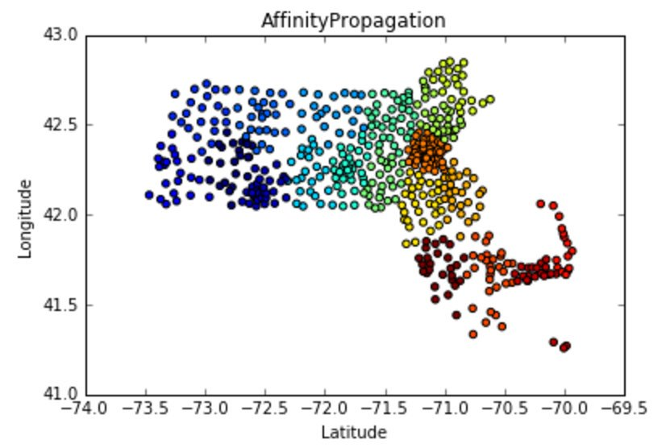

For our final project for "Tools and Techniques for Data Mining" at Boston University, Aditi Dass and I examined a dataset retrieved from the Internal Revenue Service. It contained roughly 3,820 rows and 112 columns. Each record pertained to a zip code area in the state of Massachusetts. Several attributes included: adjusted gross income, unemployment rate, and wages and salaries.
We specifically zoomed on correlations among the number of joint returns and the number of dependents per zip code area.
Utilizing the statsmodel library in Python, we determined this correlation to be 0.604 (roughly 60 percent).
The x-axis is the number of joint returns and the y-axis is the number of dependents.
We then decided to use clustering methods in order to identify densely populated areas. Affinity propogation returned 18 clusters.

We discovered that when the population size is accounted for, the mean of dependents (2,870) and the mean of joint returns (2,653) had a correlation coefficient that dell down to 0.253 (roughly 25 percent).
Areas with less people also tended to have more dependents per joint return, hinting at more of an aging population. We mapped this outlier to Cape Cod Bay, famous for its retirement homes.
More information is available in our final report.